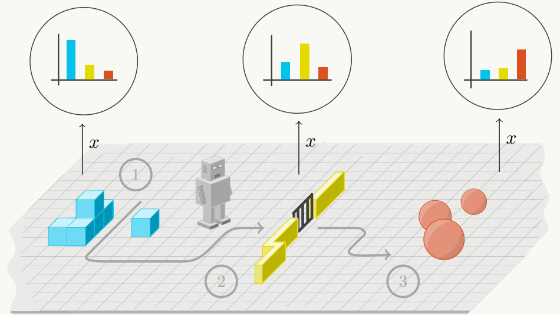

{{ page.title }}
International Conference on Learning Representations (ICLR 2020)
Anirudh Goyal(1) Shagun Sodhani(1) Jonathan Binas(1) Xue Bin Peng(2) Sergey Levine(2) Yoshua Bengio(1)
(1)Mila, Université de Montréal (2)University of California, Berkeley

|
Abstract
Reinforcement learning agents that operate in diverse and complex environments
can benefit from the structured decomposition of their behavior. Often, this is
addressed in the context of hierarchical reinforcement learning, where the aim is
to decompose a policy into lower-level primitives or options, and a higher-level
meta-policy that triggers the appropriate behaviors for a given situation. However,
the meta-policy must still produce appropriate decisions in all states. In this
work, we propose a policy design that decomposes into primitives, similarly to
hierarchical reinforcement learning, but without a high-level meta-policy. Instead,
each primitive can decide for themselves whether they wish to act in the current
state. We use an information-theoretic mechanism for enabling this decentralized
decision: each primitive chooses how much information it needs about the current
state to make a decision and the primitive that requests the most information about
the current state acts in the world. The primitives are regularized to use as little
information as possible, which leads to natural competition and specialization. We
experimentally demonstrate that this policy architecture improves over both flat
and hierarchical policies in terms of generalization.
|
Paper: [PDF] Preprint: [arXiv]
|
Bibtex
@inproceedings{
goyal2020reinforcement,
title={Reinforcement Learning with Competitive Ensembles of Information-Constrained Primitives},
author={Anirudh Goyal and Shagun Sodhani and Jonathan Binas and Xue Bin Peng and Sergey Levine and Yoshua Bengio},
booktitle={International Conference on Learning Representations},
year={2020},
url={https://openreview.net/forum?id=ryxgJTEYDr}
}